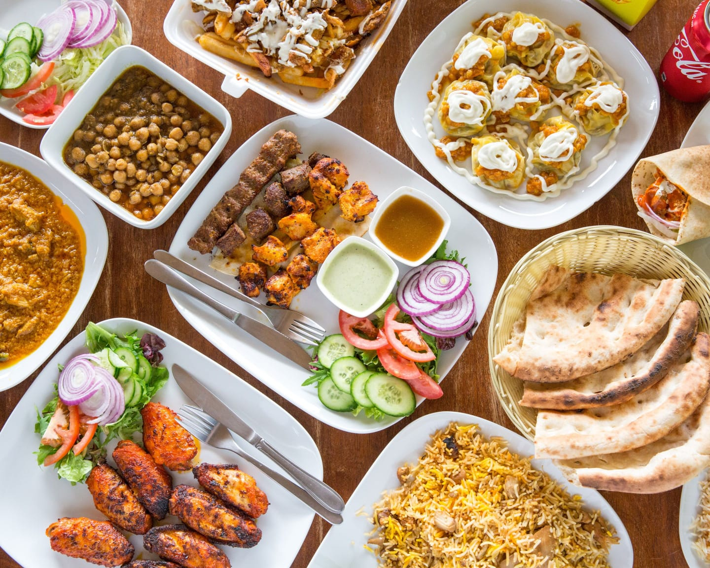
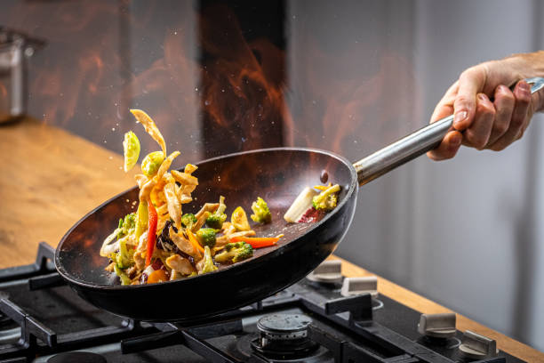
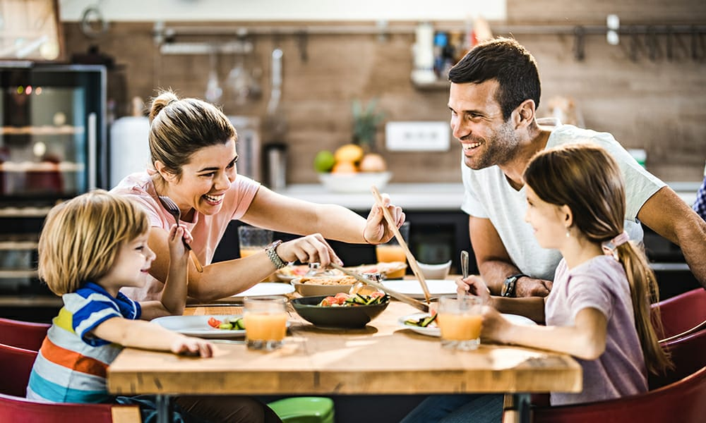

I'm so happy you found your way here to Tastegy.com. We publish simple but delicious😋 recipes that you can make in 30 minutes or less.
If you're like me,there's simply not enoughtime to spend all day in the kitchen. But I don't want to sacrifice on taste. So I've made it my mission to help you save time in the kitchen. Here you'll find a collection of all of our best recipes in one place. Whether you're looking for a quick and easy dessert to take to your next potluck, or a 30 minute dinner that the whole family will enjoy, we've got you covered!
I created this site for people like me. People who love tasty meals, but don't consider themselves a "chef".
You don't have to spend hours in the kitchen to create delicious meals that the whole family will enjoy. You just need the right recipe. You can spend less time in the kitchen and more time enjoying your family. Simply print out one of our easy recipes and amaze your family and friends! We're looking to bring some fun back into the kitchen🙂.
People have experiences around food. They celebrate birthdays, holidays, and anniversaries. They have a romantic dinner for two. We feed our family and have conversations around the dinner table. We celebrate with friends. Or kickback with a cocktail. Food is part of our experience. And here at Tastegy.com, we hope to be a small part of helping create those memories.
Thanks for stopping by! Pull up a chair and join the conversation🙂.